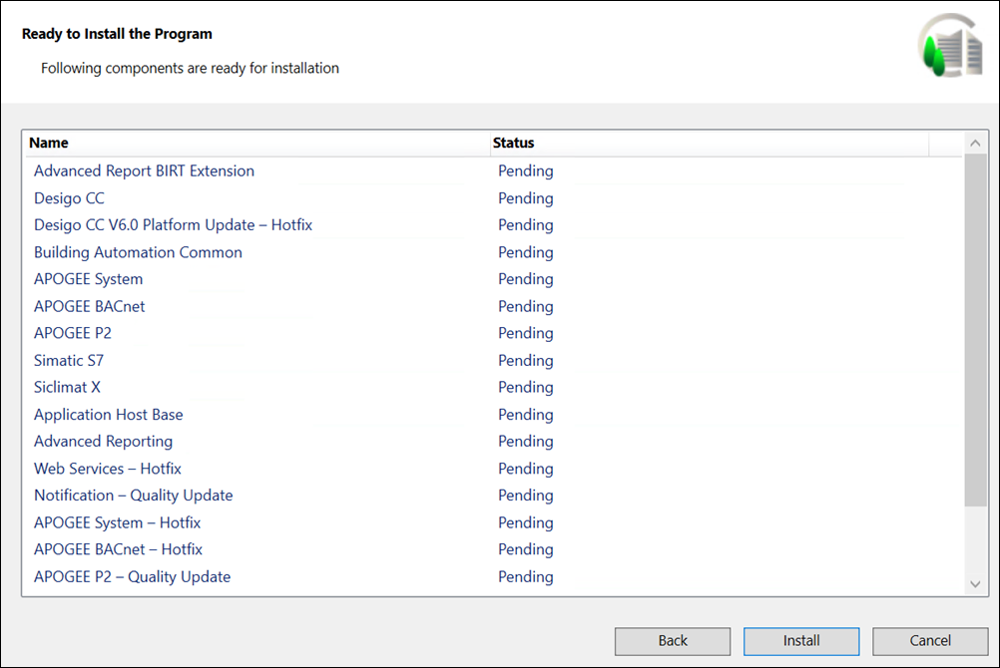

Verify and Install the Components
- Click Next to display the Ready to Install the Program dialog box listing the status of the prerequisites, Desigo CC installation (platform + mandatory extensions), platform patch, non-mandatory extensions, mandatory extension patches, non-mandatory extension patches, help merging status, and the status of the post-installation steps that you selected for execution and status for those which are executed mandatorily.

- Click Install. This can take a few minutes as the Installer installs the listed prerequisites and any extensions.
- If a mandatory prerequisite fails to install, a message displays and the Desigo CC Installer aborts the installation process. However, if a non-mandatory prerequisite fails to install, the installation process continues and notifies you about the failure at the end of the installation process.
- A message box may display asking you to restart the computer to continue the installation. If the Installer Wizard does not start automatically displaying the Ready to Install the Program dialog box, then you must restart it manually by double-clicking Gms.InstallerSetup.exe, or get approval from IT to change the UAC settings (See Changing User Account Control Settings.)
- After the IIS installation on the selected setup type, the Installer also installs Microsoft Application Request Routing (ARR) that displays in the Ready to Install the Program dialog box.
If you disable IIS configuration, ARR does not install. - A message may display if a process (installation, uninstallation, or repair of another program) is in progress notifying you that you must complete the ongoing process before installing Desigo CC.